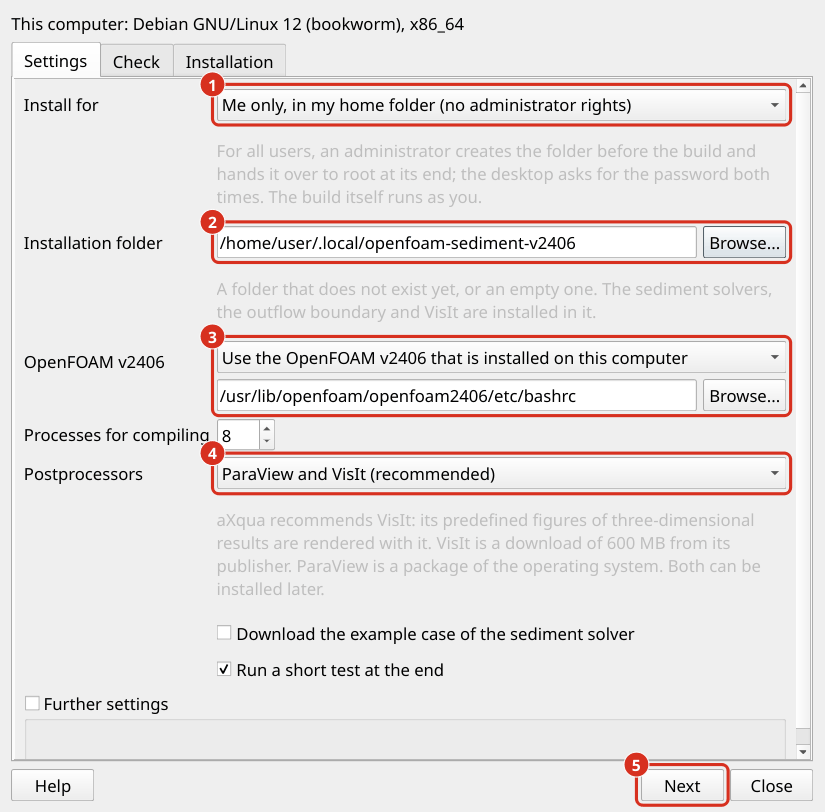

Simulationssoftware
aXqua bereitet und startet Simulationen, aber die numerischen Codes sind separate Software, die zusätzlich installiert werden muss. Das Plugin installiert sie mit einem Assistenten pro Programm. Installieren Sie TELEMAC zuerst. OpenFOAM (einschließlich Postprozessoren) ist optional und baut auf TELEMAC auf.
Bemerkung
Unter Windows laufen TELEMAC und OpenFOAM im Windows-Subsystem für Linux (WSL 2). Die Assistenten eines QGIS, das in Windows ausgeführt wird, werden nicht in WSL installiert. Installieren Sie eine Distribution mit wsl --install -d Ubuntu-24.04 in einem PowerShell (ähnlich wie Linux Terminal) mit Administratorrechten, installieren Sie aXqua innerhalb der Distribution und führen Sie axqua install start telemac in seinem Terminal aus. Wählen Sie einen Installationsordner im Linux-Dateisystem aus: Ein Build in einem Windows-Ordner (/mnt/c/...) ist um eine Größenordnung langsamer. Diese Route wurde noch nicht auf einer echten Windows-Installation getestet.
Installationsassistenten (Kurzfassung)
Die Assistenten werden auf der Registerkarte Konfiguration in der Box Simulation & Postprocessing Software geöffnet und zeigen das Betriebssystem an, das die aXqua Check Schaltfläche erkannt hat.
Bemerkung
Wenn das aXqua-Programm Check die bestehende Installation von TELEMAC-, OpenFOAM- oder Postprozessor-Software identifiziert hat, wird in der Box für jedes Programm angegeben, in dem es installiert ist oder dass es nicht gefunden wurde.
Um die Installation jeder Software zu starten, klicken Sie auf Install <software-name>… und ein Installationsassistent öffnet sich. Jeder Assistent verfügt über drei intuitive Registerkarten, in denen die Benutzer ihre Entscheidungen nach ihren Bedürfnissen treffen:
Einstellungen: Installationsordner und Installationsprogrammauswahl. Jeder Ordner und jede Datei wird in einem Dialog ausgewählt, so dass nichts eingegeben werden muss. Details zu softwarespezifischen Einstellungen finden Sie unten auf dieser Seite.
- Check: aXqua untersucht den Computer und listet die Befehle auf, die er ausführen wird, die erwartete Dauer und alles, was nicht in Ordnung ist. Ein orangefarbenes Dreieck markiert eine Warnung, mit der die Installation gestartet werden kann. Ein dunkelrotes Dreieck markiert einen Fehler. Um mit der Installation fortzufahren:
Füllen Sie die Eingabeaufforderungen in dem Dialograhmen aus, der die erforderlichen Benutzeraktionen in Terminal zeigt.
Klicken Sie dann unten links auf die INSTALL Schaltfläche.
Installation: Führen Sie den aktuellen Schritt und das Ende des Installationsprotokolls aus. Die Installation ist ein eigener Prozess: Der Assistent und QGIS können während des Betriebs geschlossen werden. Die Registerkarte Configuration meldet, dass eine Installation ausgeführt wird, und der Assistent zeigt sie erneut an, wenn sie wieder geöffnet wird.
Die Registerkarten können in beliebiger Reihenfolge besucht werden, und Back und Next unten im Assistenten gehen durch sie hindurch. Geänderte Einstellungen werden erneut überprüft, wenn die Registerkarte Check geöffnet wird.
Am Ende überprüft aXqua, ob der Installateur das Programm erstellt hat, gibt das Programm und seinen Installationsordner in das Computerprofil (Plugin-Profil) ein und startet es einmal. Nach einer erfolgreichen Installation wird die Schaltfläche Cancel the installation dunkelgrau-grün und liest Installation complete; ein Klick schließt den Assistenten. Eine weitere Konfiguration ist nicht erforderlich.
In der Box Simulation & Postprocessing Software ist der Pfad eines gefundenen Programms in dunkelgrün und Not found on this computer. in fettem dunkellila geschrieben. Klicken Sie auf Install <software-name>… für ein Programm, das bereits installiert ist, fragt Software already installed. Continue with re-installation? No zurück zum Configuration Registerkarte. Yes öffnet den Assistenten, dessen Settings-Tab dann mit der Einstellung beginnt Existing installation:
Remove the existing installation and install it again in its folder löscht die frühere Installation, bevor die neue erstellt wird. aXqua entfernt nur eine Installation, die einer seiner Installateure vorgenommen hat: den Unterordner
telemac-mascaretvon TELEMAC, einen Ordner des OpenFOAM-Installationsprogramms oder die VisIt-Ordner der Postprozessoren.Continue in the existing folder behält, was heruntergeladen und gebaut wird, und wiederholt die verbleibenden Schritte. Der OpenFOAM-Installer weigert sich, einen Ordner fortzusetzen, den eine andere Version gestartet hat; die Registerkarte Check sagt dies, bevor etwas läuft.
Install it again in a new folder lässt die bestehende Anlage unberührt.
Bemerkung
Die Assistenten führen Installer-Skripte des Installateur-Repository aus, in der Version, mit der diese Version von aXqua getestet wurde. Der OpenFOAM-Installer dieses Repositorys wird zusammen mit dem Quellcode von Olsens Sediment Solver mit aXqua ausgeliefert, so dass die Installation von OpenFOAM nicht von der Website abhängt, auf der Nils Reidar Olsen sie veröffentlicht (das Repo war mit dem Fehler HTTP 502 im Oktober 2026 nicht erreichbar). Die Skripte existieren für Debian 12, Ubuntu 22.04, Ubuntu 24.04 und Linux Mint 22. Für ein anderes System, das auf einem dieser Systeme aufgebaut ist, wählen Sie das Basissystem unter Further settings auf der Registerkarte Settings aus.
Nutzerrechte
Systempakete und Administratorrechte: Compiler und numerische Bibliotheken sind Pakete des Betriebssystems, und ihre Installation ist der einzige Schritt, der Administratorrechte erfordert. Die Registerkarte Check gibt an, wie viele der erforderlichen Pakete fehlen, und zeigt den einen Befehl an, der sie in einem Feld unter der Überschrift ERFORDERLICHE BENUTZERAKTIONEN in TERMINAL: installiert, beide in dunkelviolett. Der Befehl kann auf zwei Arten ausgeführt werden:
Run fixes führt den Befehl aus. Auf einem Desktop fragt der Passwortdialog des Desktops nach dem Passwort; andernfalls öffnet sich ein Terminal Fenster und fragt danach. Das Passwort geht nicht durch das Plugin. aXqua überprüft dann den Computer erneut und wiederholt die Korrekturen, solange sie Fortschritte machen.
Copy the command Platziert den Befehl in der Zwischenablage, um in ein Terminal eingefügt zu werden. Senden Sie auf einem Computer, der von einer Institution verwaltet wird, den Befehl an den Administrator.
Wenn die Korrekturen das Problem nicht lösen, weil zum Beispiel die gleichen Pakete fehlen, erscheint die Schaltfläche Report issue. Es öffnet ein Fenster mit einem Bericht des Computers, dem Befehl und dem gefundenen Scheck, in dem Ihr Home-Ordner als ~ geschrieben ist. Der Bericht kann gelesen und geändert werden, bevor er gesendet wird: Open on GitHub öffnet ein neues Problem im Issue Tracker (ein kostenloser GitHub-Account ist erforderlich), Send by e-mail öffnet das Mailprogramm mit dem Bericht (kein Account ist erforderlich) und Copy report platziert es in der Zwischenablage. Eine fehlgeschlagene Installation bietet die gleiche Schaltfläche auf der Registerkarte Installation mit dem Ende des Installationsprotokolls im Bericht.
Nur für mich oder für alle Benutzer: Die erste Einstellung jedes Assistents, Install for, entscheidet, wer das Programm nutzen kann:
Me only (der Standard) wird in einem Ordner in Ihrem Heimordner installiert:
~/optfür TELEMAC,~/.local/openfoam-sediment-v2406für OpenFOAM und~/.local/axqua-postprocessorsfür VisIt. Die Installation selbst erfordert keine Administratorrechte; nur fehlende Systempakete tun dies, wie oben beschrieben.All users of this computer Installiert in einen Ordner unter
/opt:/opt/telemac,/opt/openfoam-sediment-v2406oder/opt/axqua-postprocessors. Der Build läuft weiterhin unter Ihrem Benutzerkonto, da sich die Installateure weigern, als Administrator zu kompilieren. Das Passwort eines Administrators wird zweimal gefragt: vor dem Build, um den Ordner für Sie zu erstellen, und am Ende, um den Ordner an den Administrator zu übergeben, lesbar für jeden Benutzer und beschreibbar für niemanden sonst. Der aXqua jedes anderen Benutzers findet die Programme in diesen Ordnern ohne Eintrag in seinem Profil. Das spätere Ändern des Ordners, zum Beispiel um das Beispiel Fälle von TELEMAC hinzuzufügen, erfordert wiederum einen Administrator.
Auf dem Desktop fragt der Passwortdialog des Desktops nach dem Passwort. In einem Terminal lässt axqua install start openfoam --for-all-users --foreground sudo danach fragen; eine getrennte Installation ohne Desktop kann nicht fragen und stoppt, bevor sie etwas erstellt.
Klicken Sie Check again danach. Die Installation selbst läuft mit den Rechten des gewöhnlichen Benutzers und schreibt nur in den Installationsordner.
Von einem Terminal Jeder Assistent entspricht einem Befehl, axqua install, der dasselbe ohne QGIS tut (Terminalsyntax).
TELEMAC
TELEMAC Löst die tiefengemittelten (2D) und 3D-Flüsse in Verbindung mit einer Vielzahl von Modulen für Zwecke wie Sedimenttransport (Gaia), Wasserqualitätsanalyse (WAQTEL), Wellenausbreitung (ARTEMIS und TOMAWAC). Sein Sedimenttransportmodul GAIA ist Teil derselben Anlage. aXqua wurde mit TELEMAC v9.1.1 entwickelt und getestet.
Klicken Sie auf TELEMAC installieren… auf der Registerkarte Konfiguration. Der Assistent ist auf Debian 12, Ubuntu 24.04 und Linux Mint 22 verfügbar. Sein Settings Tab hat vier Einstellungen außer Install for:
Einstellung |
Bedeutung |
|---|---|
Anlagenordner |
TELEMAC ist im Unterordner |
TELEMAC-Version |
Lassen Sie das Feld für v9.1.1 leer. |
Beispiel Fälle von TELEMAC |
TELEMAC wird mit etwa 830 Beispielfällen verteilt. Ihre Steuerdateien werden immer mit dem Quellcode installiert. Die Einstellung wählt aus, wie viele ihrer großen Dateien zusätzlich heruntergeladen werden. Input files of examples only (der Standard) lädt herunter, was ein Beispiel liest, was hauptsächlich das Rechennetz ist: etwa 360 Dateien und 460 MB. Everything lädt auch die Referenzergebnisse herunter, mit denen sich TELEMAC selbst validiert, und die Handbücher: 1.500 Dateien und 1,65 GB, was etwa eine Stunde dauert. Steering files only lädt keine der großen Beispieldateien herunter. aXqua selbst benötigt keine dieser Dateien. |
SALOME Archiv |
Fakultativ Ein heruntergeladenes Archiv von SALOME, das dann neben TELEMAC installiert wird. aXqua verwendet Gmsh (Geuzaine und Remacle 2009) und benötigt SALOME nicht, da es das Rechennetz und die Eingabedateien selbst generiert. |
Die Installation lädt den Quellcode von TELEMAC herunter und kompiliert ihn zur parallelen Berechnung mit den Systembibliotheken MPI, MUMPS, METIS und MED. Es erfordert etwa 2,5 GB freien Speicherplatz mit den Eingabedateien des Beispiels Fälle und etwa 5 GB mit allem. Auf einer Workstation mit 32 Prozessorkernen dauerte die Installation mit der Standardeinstellung 11 Minuten, wovon die Eingabedateien des Beispielfalls 7 Minuten dauerten.
Die großen Dateien des Beispiels Fälle werden getrennt vom Quellcode gespeichert, und der Download-Server liefert sie einzeln, wenn alle angefordert werden. Aus diesem Grund fordert die Standardeinstellung nur die Dateien an, die ein Lauf liest. aXqua bestimmt diese Dateien von TELEMAC selbst: Die Keyword-Wörterbücher von TELEMAC geben für jede Datei an, ob ein Lauf sie liest oder schreibt. Die fehlenden Dateien können jederzeit danach heruntergeladen werden: axqua install telemac-examples <folder> lädt die noch fehlenden Eingabedateien herunter, und git lfs pull im Ordner telemac-mascaret lädt alles herunter.
Das Ergebnis ist die Datei telemac-mascaret/configs/pysource.<system>.sh im Installationsordner. Diese Datei ist das Umgebungsskript von TELEMAC: Sie legt alle Variablen fest, die TELEMAC benötigt. Der Assistent gibt es als Solver Bindung von TELEMAC (Definieren Sie Solver Bindungen) in das Profil ein.
Wenn die Installation fehlschlägt, zeigt der Assistent die letzten Zeilen des Installationsprotokolls und den Standort des vollständigen Protokolles an. Nachdem die Ursache behoben ist, starten Sie den Assistenten erneut mit dem gleichen Ordner. Der Installer fährt mit dem fort, was bereits heruntergeladen wurde.
Eine manuelle Installation wird in TELEMAC Installations-Tutorial beschrieben. Geben Sie das Umgebungsskript einer manuellen Installation im Profileditor ein.
OpenFOAM
OpenFOAM ermöglicht eine bessere Strömungsauflösung in 3D, was besonders für die Simulation von Wasserbauwerken wie Wehren oder vertikalen Schlitzen wichtig ist. aXqua ist so konzipiert, dass es mit OpenFOAM v2406 funktioniert, wie es von OpenCFD (openfoam.com) vertrieben wird, was mit dem Sedimenttransport Solver sediDriftFoam (Olsen et al. 2023) und sediDriftFoam2 (Olsen 2025) kompatibel ist. Die Veröffentlichungen der OpenFOAM Foundation (openfoam.org) verwenden unterschiedliche Dateiformate und lesen nicht die Eingabedateien, die aXqua schreibt.
Wichtig
Installieren Sie TELEMAC auch, wenn OpenFOAM der Code of Interest ist. aXqua startet jede OpenFOAM-Simulation aus dem Ergebnis eines kurzen TELEMAC-Laufs, der als Warm-up (aXqua Warm-up Konzept) bezeichnet wird. Ohne sie muss OpenFOAM eine trockene Flusssohle alleine mit Wasser füllen, was die Rechenzeit vervielfacht.
Klicken Sie auf Install OpenFOAM… auf der Registerkarte Configuration. Der Assistent ist auf Debian 12, Ubuntu 22.04, Ubuntu 24.04 und Linux Mint 22 auf Computern mit einem x86-64-Prozessor verfügbar. Es installiert die folgenden Komponenten in einem Ordner:
OpenFOAM v2406, es sei denn, eine Installation dieser Version existiert bereits (siehe die Einstellungen unten).
Der Sedimenttransport Solver sediDriftFoam (Olsen et al. 2023) und sediDriftFoam2 (Olsen 2025), und eine Variante des letzteren mit einem Bühnenausfluss,
sediDriftFoam2Rating, den der Installateur als nicht validiert markiert.Die Bühnenentladung Ausflussrand des Federal Waterways Engineering and Research Institute (BAW) für Solver
interFoam(Thorenz 2024).Die Postprozessoren ParaView und VisIt (Postprozessoren), sofern sie nicht deselektiert sind.
Einstellung |
Bedeutung |
|---|---|
Anlagenordner |
Ein Ordner, der noch nicht existiert, oder ein leerer. Der Installateur installiert in einen neuen Ordner oder setzt eine eigene Installation fort und lehnt jeden anderen Ordner ab. |
OpenFOAM v2406 |
Use the OpenFOAM v2406 that is installed on this computer baut den Solver auf einer bestehenden Installation auf, was einige Minuten dauert. aXqua betritt die Anlage, die es gefunden hat. Wählen Sie die Datei |
Verfahren zur Zusammenstellung |
Die Anzahl der Prozessorkerne, die zum Kompilieren verwendet werden. Jeder Prozess benötigt etwa 2 GB Speicher. |
Postprozessoren |
ParaView and VisIt ist der Standard und die empfohlene Wahl, da aXqua seine vordefinierten dreidimensionalen Figuren mit VisIt darstellt. ParaView only lässt VisIt aus, was einen Download von 600 MB spart. None installiert keines der beiden Programme für einen Computer, auf dem beide bereits installiert sind. Ein Programm, das ausgelassen wurde, kann jederzeit danach installiert werden (Postprozessoren). |
Downloaden Sie das Beispiel Fall des Sediments Solver |
Fügt das Beispiel Fall hinzu, das mit sediDriftFoam veröffentlicht wurde. |
Führen Sie am Ende einen kurzen Test durch |
Läuft |


Die Registerkarte Settings des OpenFOAM-Assistenten. (1) Für wen das Programm installiert ist: für Sie allein oder für alle Benutzer des Computers. (2) Der Installationsordner. (3) Der bestehende OpenFOAM v2406, auf dem der Solver aufgebaut ist, oder die Auswahl, ihn zu kompilieren. (4) Die Auswahl der Postprozessoren. (5) Next führt zum Tab Check.
Ein verpacktes OpenFOAM v2406 spart die Stunden der Zusammenstellung. OpenCFD bietet Pakete für Debian und Ubuntu. Ein Administrator installiert sie gemäß Installationsanweisungen von OpenCFD, der die Datei /usr/lib/openfoam/openfoam2406/etc/bashrc erstellt. Der Assistent findet diese Installation von selbst.
Das Ergebnis ist die Datei shell-rc.sh im Installationsordner. Es ist das Umgebungsskript dieser Installation: Es lädt OpenFOAM v2406 und fügt den kompilierten Solver und die Rand-Bibliothek hinzu. Der Assistent gibt sie als Solver Bindung von OpenFOAM in das Profil ein und gibt die ausgewählten Postprozessoren ein. Es wird keine bestehende OpenFOAM-Installation und keine Startdatei des Benutzerkontos geändert.
Bemerkung
aXqua erstellt Simulationen mit dem Sedimenttransport Solver sediDriftFoam2, für Feinsediment über einem Bett, das an Ort und Stelle bleibt (Simulations > Morphodynamics mit dem Simulationsprogramm OpenFOAM, OpenFOAM Setup), und OpenFOAM-Simulationen mit der Bühnenentladung Ausflussrand der BAW (openfoam.outflow_boundary: rating-curve, OpenFOAM-Auswahl). Die Variante sediDriftFoam2Rating, die das Bett und das Wasserspiegel bewegt, wird installiert, aber nicht von aXqua eingerichtet, da aXqua das Bett und die Oberfläche einer Sedimentsimulation an Ort und Stelle hält.
Referenzen
Geuzaine, C., Remacle, J.-F., 2009. Gmsh: A 3-D finite element mesh generator with built-in pre- and post-processing facilities. International Journal for Numerical Methods in Engineering 79, 1309–1331. https://doi.org/10.1002/nme.2579